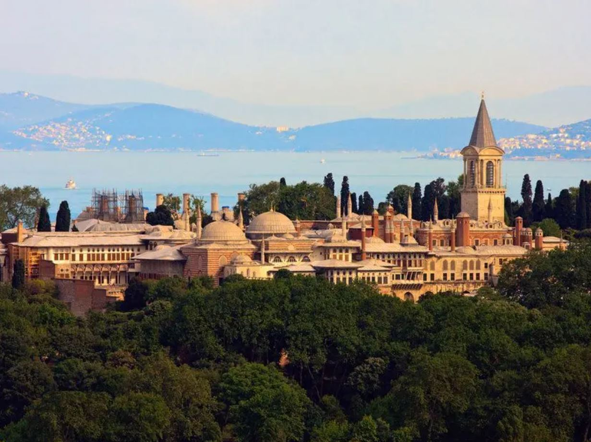

Topkapı Sarayı Müzesi
Topkapı Sarayı Müzesi Hakkında
Topkapı Sarayı Müzesi Hakkında
Topkapı Sarayı (Osmanlı Türkçesi: طوپقپو سرايى), İstanbul Sarayburnu'nda, Osmanlı İmparatorluğu'nun 600 yıllık tarihinin 400 yılı boyunca, devletin idare merkezi olarak kullanılan ve Osmanlı padişahlarının yaşadığı saraydır.[1] Bir zamanlar içinde 4.000'e yakın insan yaşamıştır.
Topkapı Sarayı Fatih Sultan Mehmed tarafından 1478’de yaptırılmış, Abdülmecid’in Dolmabahçe Sarayı’nı yaptırmasına kadar yaklaşık 380 sene boyunca devletin idare merkezi ve Osmanlı padişahlarının resmi ikâmetgâhı olmuştur. Kuruluş yıllarında yaklaşık 700.000 m²'lik bir alanda yer alan sarayın bugünkü alanı 80.000 m²'dir.
Topkapı Sarayı, saray halkının Dolmabahçe Sarayı, Yıldız Sarayı ve diğer saraylarda yaşamaya başlaması ile birlikte boşaltılmıştır. Padişahlar tarafından terk edildikten sonra da içinde birçok görevlinin yaşadığı Topkapı Sarayı hiçbir zaman önemini kaybetmemiştir. Saray zaman zaman onarılmıştır. Ramazan ayı içerisinde padişah ve ailesi tarafından ziyaret edilen Kutsal Emanetler'in bulunduğu Hırka-i Saadet Dairesi’nin her yıl bakımının yapılmasına ayrı bir önem verilmiştir.
Fatih Sultan Mehmed 1465 yılında Topkapı Sarayı'nın inşaatını başlatmıştır
Topkapı Sarayı’nın ilk defa, adeta bir müze gibi ziyarete açılması Abdülmecid dönemine rastlamıştır. O dönemin İngiliz elçisine Topkapı Sarayı Hazinesi’ndeki eşyalar gösterilmiştir. Bundan sonra Topkapı Sarayı Hazinesi’ndeki eski eserleri yabancılara göstermek gelenek haline gelir ve Abdülaziz zamanında, ampir üslupta camekanlı vitrinler yaptırılır, hazinedeki eski eserler bu vitrinler içinde yabancılara gösterilmeye başlanır. II. Abdülhamid tahttan indirildiği sıralarda Topkapı Sarayı Hazine-i Hümâyûn’un pazar ve salı günleri olmak üzere halkın ziyaretine açılması düşünülmüşse de bu gerçekleşememiştir.
Mustafa Kemal Atatürk’ün emriyle 3 Nisan 1924 tarihinde halkın ziyaretine açılmak üzere İstanbul Âsâr-ı Atika Müzeleri Müdürlüğü’ne bağlanan Topkapı Sarayı önce Hazine Kethüdalığı, sonra Hazine Müdüriyeti adıyla hizmet vermeye başlamıştır. Bugün ise Topkapı Sarayı Müzesi Müdürlüğü adıyla hizmet vermeye devam etmektedir.
1924 yılında bazı ufak onarımlar yapıldıktan ve ziyaretçilerin gezebilmeleri için gereken idari önlemler de alındıktan sonra Topkapı Sarayı 9 Ekim 1924 tarihinde müze olarak ziyarete açılmıştır. O tarihte ziyarete açılan bölümler Kubbealtı, Arz Odası, Mecidiye Köşkü, Hekimbaşı Odası, Mustafa Paşa Köşkü ve Bağdat Köşkü’dür.
Günümüzde büyük turist kitlelerini kendine çeken saray 1985 yılında UNESCO Dünya Mirasları Listesi'ne giren İstanbul Tarihî yarımada içerisindeki tarihi eserlerin en başında gelmektedir.[4] Günümüzde müze olarak hizmet vermektedir.[5]